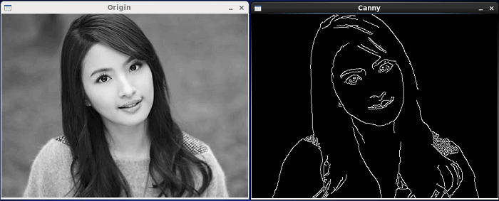

A convolutional neural network is a deep learning algorithm that is widely used in computer vision to classify images. These types of artificial
neural networks are capable of learn patterns in the input images (textures and edges) and is able to differentiate one from another (Saha, 2018).
Unlike multi-level perceptrons, convolutional neural networks are specialized to work with grid data, such as images or videos. This is because it
uses a mathematical operation called convolution that allows it to capture spatial and temporal dependencies (Saha, 2018).
Convolution
In the context on convolutional neural networks, the convolution is the mathematical operation used to extract patterns from input data, such as edges or
textures. This is achieved by convoluting the input image with a kernel or filter. The kernel is a matrix of weights we use as a sliding window to
move over the input image. On each location we multiply each value of the kernel ith the overlaped values from the input image and after thar we sum the results
to get a single numerical value. After performing this operation over the whole input image, we get as result an matrix of numerical values called feature map.
Convolution (Saha, 2018).
One of the most important features CNN can capture are edges. Using the correct filter, a convolutional layer of neurons can accurately extract edges from an
image such as those in the figure below.

Edge detection (Alibaba, 2017).
Biased and wrong? Facial recognition tech in the dock
The main concerns in the article are related to the ethical use of AI in facial recognition (FR) (Wall, 2019).
One of those concerns is the potential for bias in FR technology, particularly with race and gender.
This raises concerns about the potential for discriminatory outcomes of civil liberties, especially for marginalized communities,
because the FR systems are mainly trained with images of white people. This causes a high false matching among people with darker skin tones,
especially in women, with a high error rate of being recognized as men.
Another concern is the need for more regulation and legal frameworks governing the use of FR technology. Some cities and organizations have
banned or expressed concerns about using FR technology due to its imperfections and potential danger. However, others continue to try and use the
technology. This highlights the need for regulations to ensure that FR technology is used fairly and ethically.
Convolutional Neural Network Design for image classification using Keras
Keras is a powerful open-source Python library used for building, training and evaluating deep learning models (Keras). It offers a wide range of methods
for data preparation tasks, such as image processing. Additionally, it supports several types of neural networks such as Convolutional Neural Networks.
The following architecture was presented in the final assignment of Unit 11 (Castro & Castro, 2023), following advices from Wang et al. (2020). In this arquitecture, we introduce
several types of layers, such as convolutional, max-pooling, batch normalization, dropout and dense layers.
CNN architecture using BatchNormalization and Dropout layers (Castro & Castro, 2023).
The architecture shown in the figure above lists the following layers.
Conv2D: Convolutional layer. This layer is used to extract important features such as edges and textures through convolution operations.
MaxPool2D: This layer reduces the dimensionality of the input data while keeping important features.
BatchNormalization: This layer normalizes the inputs of the layer to improve training stability.
Dropout: This layer randomly sets inputs to 0 based on a dropout rate. This reduces overfitting during training.
Flatter: This layer converts a data matrix into a vector.
Dense: This is a fully connected layer.
Building the model using python
The following is the piece of code we used to build this model in the assignment from Unit 11 (Castro & Castro, 2023).
model = Sequential()
model.add(Conv2D(32, (3, 3), padding='same', activation='relu', input_shape=(32, 32, 3)))
model.add(BatchNormalization())
model.add(Conv2D(32, (3, 3), padding='same', activation='relu'))
model.add(BatchNormalization())
model.add(MaxPool2D(pool_size=(2, 2)))
model.add(Dropout(0.2))
model.compile(loss='categorical_crossentropy',
optimizer='adam',
metrics=['accuracy'])
return model
Building a convolutional neural network in python (Castro & Castro, 2023)
Testing the model
After training our mode, the final result
index = 1400
my_image = x_test[index]
plt.imshow(my_image)